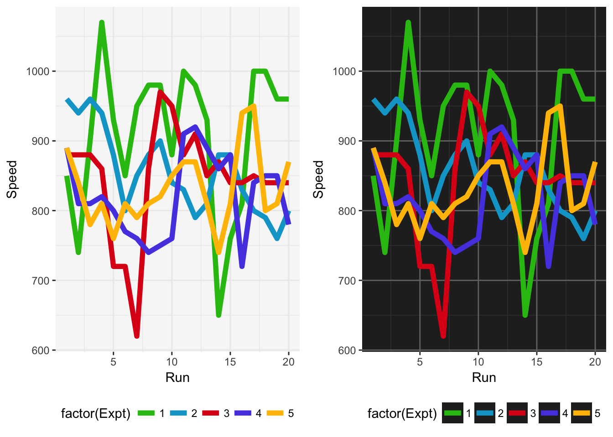
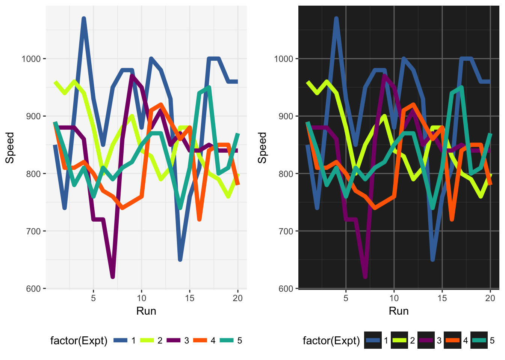
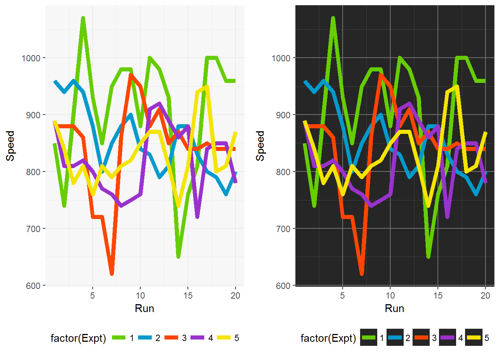
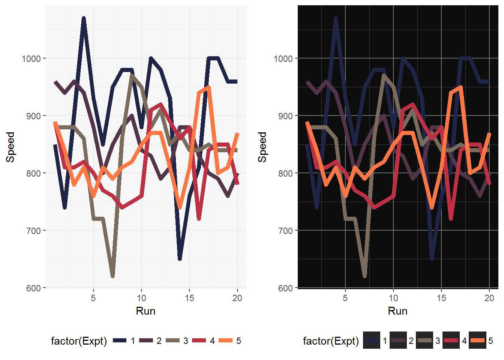
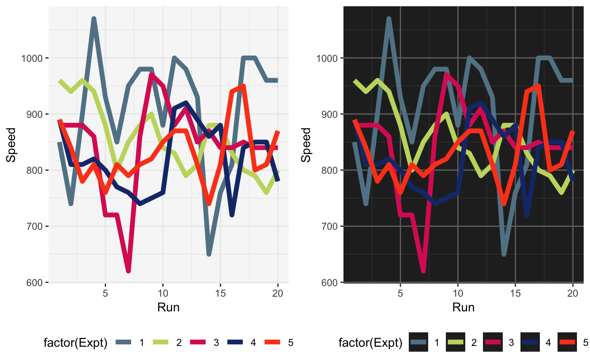
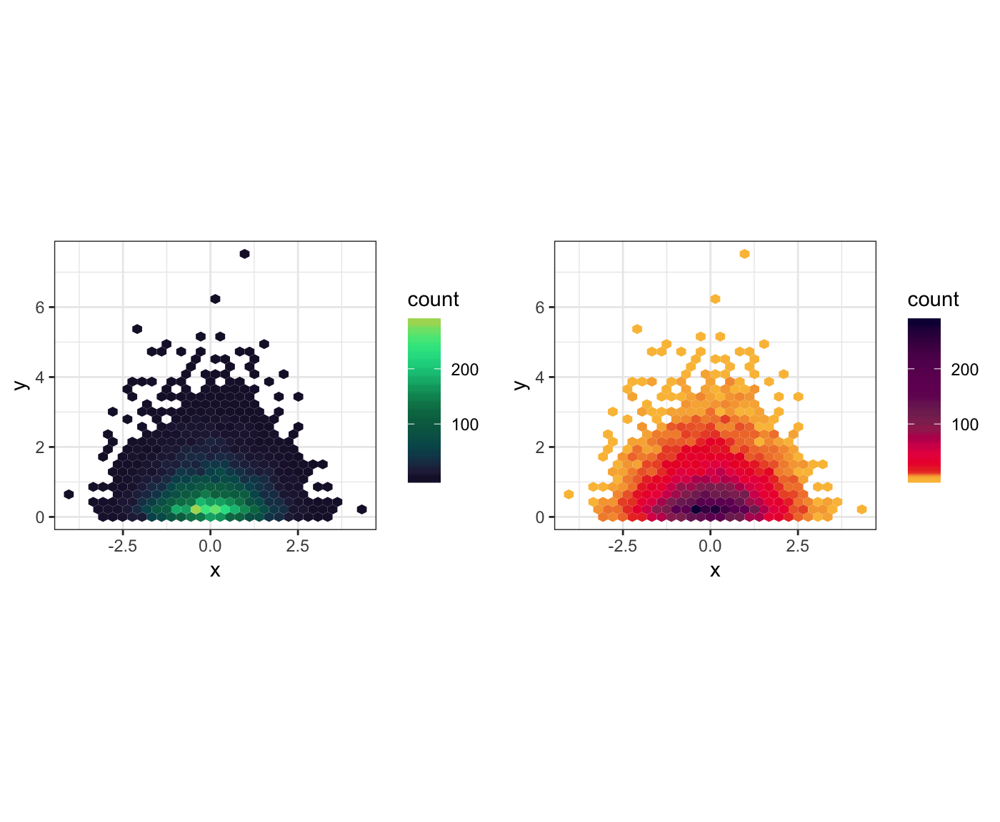

Using the jcolors Package
Jared Huling
2017-07-14
jcolors intro

jcolors contains a selection of ggplot2 color palettes that I like
Installation
Install jcolors from GitHub:
install.packages("devtools")
devtools::install_github("jaredhuling/jcolors")Access the jcolors color palettes with jcolors():
library(jcolors)
jcolors('default')## kelly_green rich_electric_blue maximum_red
## "#29BF12" "#00A5CF" "#DE1A1A"
## majorelle_blue fluorescent_orange
## "#574AE2" "#FFBF00"Discrete Color Palettes
Use with ggplot2
Now use scale_color_jcolors() with ggplot2:
library(ggplot2)
library(gridExtra)
data(morley)
pltl <- ggplot(data = morley, aes(x = Run, y = Speed,
group = factor(Expt),
colour = factor(Expt))) +
geom_line(size = 2) +
theme_bw() +
theme(panel.background = element_rect(fill = "grey97"),
panel.border = element_blank(),
legend.position = "bottom")
pltd <- ggplot(data = morley, aes(x = Run, y = Speed,
group = factor(Expt),
colour = factor(Expt))) +
geom_line(size = 2) +
theme_bw() +
theme(panel.background = element_rect(fill = "grey15"),
legend.key = element_rect(fill = "grey15"),
panel.border = element_blank(),
panel.grid.major = element_line(color = "grey45"),
panel.grid.minor = element_line(color = "grey25"),
legend.position = "bottom")
grid.arrange(pltl + scale_color_jcolors(palette = "default"),
pltd + scale_color_jcolors(palette = "default"), ncol = 2)
grid.arrange(pltl + scale_color_jcolors(palette = "pal2"),
pltd + scale_color_jcolors(palette = "pal2"), ncol = 2)
Color palettes can be displayed using display_jcolors()

More example plots
grid.arrange(pltl + scale_color_jcolors(palette = "pal3"),
pltd + scale_color_jcolors(palette = "pal3"), ncol = 2)
grid.arrange(pltl + scale_color_jcolors(palette = "pal4"),
pltd + scale_color_jcolors(palette = "pal4") +
theme(panel.background = element_rect(fill = "grey5")), ncol = 2)
grid.arrange(pltl + scale_color_jcolors(palette = "pal5"),
pltd + scale_color_jcolors(palette = "pal5"), ncol = 2)
pltd <- ggplot(data = OrchardSprays, aes(x = rowpos, y = decrease,
group = factor(treatment),
colour = factor(treatment))) +
geom_line(size = 2) +
geom_point(size = 4) +
theme_bw() +
theme(panel.background = element_rect(fill = "grey15"),
legend.key = element_rect(fill = "grey15"),
panel.border = element_blank(),
panel.grid.major = element_line(color = "grey45"),
panel.grid.minor = element_line(color = "grey25"),
legend.position = "bottom")
pltd + scale_color_jcolors(palette = "pal6")
Continuous Color Palettes
Use with ggplot2
set.seed(42)
plt <- ggplot(data.frame(x = rnorm(10000), y = rexp(10000, 1.5)), aes(x = x, y = y)) +
geom_hex() + coord_fixed() + theme(legend.position = "bottom")
plt2 <- plt + scale_fill_jcolors_contin("pal2", bias = 1.75) + theme_bw()
plt3 <- plt + scale_fill_jcolors_contin("pal3", reverse = TRUE, bias = 2.25) + theme_bw()
grid.arrange(plt2, plt3, ncol = 2)## Warning: Computation failed in `stat_binhex()`:
## Package `hexbin` required for `stat_binhex`.
## Please install and try again.
## Warning: Computation failed in `stat_binhex()`:
## Package `hexbin` required for `stat_binhex`.
## Please install and try again.